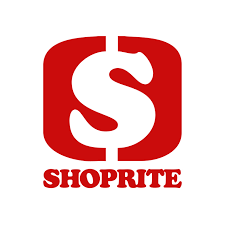

SHOPRITE
The Shoprite Group of companies was established when PEP Stores purchased a small grocery company with eight stores from the Rogut family in 1979.[4] In 1990 Shoprite opened in Namibia. In 1991, it acquired the national Checkers chain. In 1995 the first store in Lusaka, Zambia, was opened. That same year they acquired a centralised distribution company Sentra, which had been acting as a central buyer for 550 owner-managed supermarkets, thereby allowing Shoprite to expand into franchising.
WHERE WILL YOU FIND THEM
Shoprite is found at enterance number 1